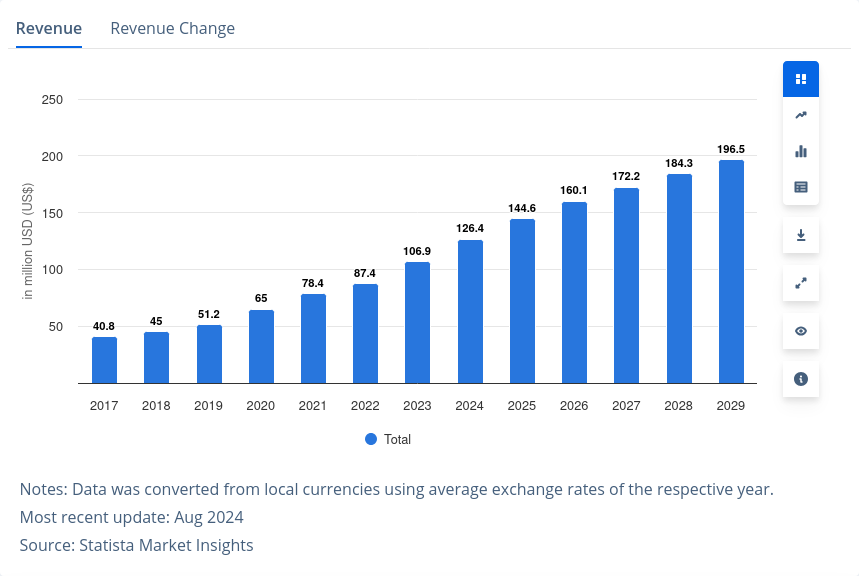
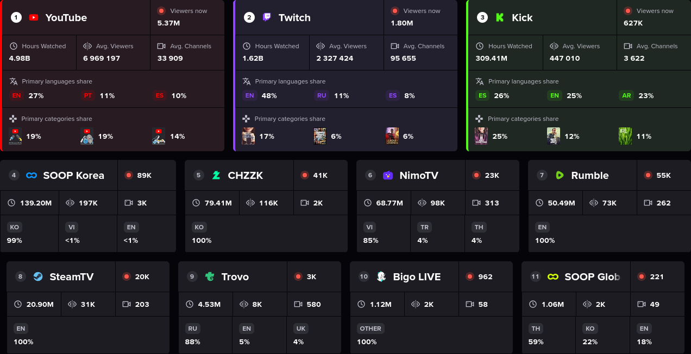

Chat, is this real?
Wake up babe, a universal livestream utility just dropped.
인터넷 방송(livestreaming)?
- 인터넷 방송, live streaming
- 스트리밍 기술을 이용하여 실시간 또는 준실시간으로 영상과 음성을 네트워크를 통해 전송하는 것.
- 인터넷 방송인, live streamer
- 실시간으로 시청자와 소통하며 인터넷 방송을 진행하는 사람.
인터넷 방송 시장 규모

플랫폼의 파편화 — 현황

플랫폼의 파편화 — 대한민국의 경우
- 2010년, 아프리카TV의 등장으로 1인 인터넷 방송업 시작
- 2017년, 아프리카TV 시청자 감소 및 Twitch의 한국 진출
- 2023년, Twitch의 한국 사업부 철수로 치지직, 아프리카TV로 다시 시장 양분
인터넷 방송의 핵심, 실시간 소통

대다수의 소통형 컨텐츠는 Twitch만을 지원함
플랫폼의 파편화는 곧 API의 파편화
libcitrus, the Universal Livestream Firehose
- 채팅
- 모든 방송 플랫폼의 주요 소통 창구
- 후원
- 인터넷 방송인이 현금화 가능한 재화를 보내는 것 (예시: YouTube의 슈퍼챗, Twitch의 비트, 치지직의 치즈, SOOP의 별풍선)
- 시청자
- 인터넷 방송을 스트리밍받는 사용자
- 관리자
- 인터넷 방송 시청자를 관리할 수 있는 권한을 가진 시청자 (YouTube의 "렌치", Twitch의 "모더레이터")
- 팔로워
- 방송 시작 알림을 수신하는 시청자 (YouTube의 "구독자", Twitch의 "팔로워")
- 구독자
- 정기적으로 방송인을 후원하는 시청자 (YouTube의 "멤버십", Twitch의 "구독자")
스트리밍 플랫폼의 파편화된 API를 추상화하여 하나의 라이브러리로 제공하는 프로젝트.
LIB-CITRUS?
"Chat, is this real?" Universal Streaming Library
lib- UNIX 계열 시스템에서 라이브러리를 나타내는 접두사
- Chat, is this real?
- 한국어에 "이거 진짜예요?"에 대응하는 방송인 밈으로, 실시간 소통의 중요성을 상징
- Universal Streaming Library
- 여러 스트리밍 플랫폼의 API를 하나의 "스트림"으로 제공하는 기능을 의미
유사 프로젝트 및 사례
- RevenueCat
- Google Play Store, Apple App Store 등 앱 스토어의 인 앱 결제 통합 서비스
youtube-dl- 오픈소스 미디어 다운로드 라이브러리
- AT protocol
- Bluesky 마이크로블로그 플랫폼에서 사용하는 데이터 취합 프로토콜
SWOT 분석
- Strength
- 게임 개발이나 웹 개발에 사용되는 언어 모두를 하나의 라이브러리로 지원하여 DX 극대화
- Weakness
- 인원 수가 적어 이후 라이브러리의 유용성을 보일 데모 종류가 한정적
- Opportunity
- 현재 각각의 플랫폼별 라이브러리는 존재하나, 여러 플랫폼을 하나로 통합하는 라이브러리는 부재
- Threat
- 다운스트림 라이브러리로, 각 플랫폼이 이후에 부과할 수 있는 API 관련 제한을 조절하기 힘듦
프로젝트 로드맵
- 한국 시장에서 주로 보이는 플랫폼의 API 분석 후, 추상화 가능한 기능 추출
- Language-agonistic specification 설계 후 구현
- 각 플랫폼별 데이터 취합 루틴 구현
- 주요 프로그래밍 언어 (TypeScript, C#, Java, Lua) 바인딩 제작
- 주요 분야별 데모 (도구, 게임, 모드) 개발
팀원 역할
| 팀원 | 역할 |
|---|---|
| 이희준 | 팀장, 플랫폼별 데이터 취합 로직 구현, 데모 제작 |
| 이주헌 | 공통 API 설계, 바인딩 제작 |
You create, we do the rest. libcitrus.
Thank you.